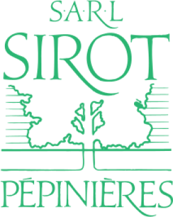

Pépinière Sirot
Historique et activité

État des inscriptions | Inscrite (Insee)le 01/10/1976 Avis de situation Immatriculée au RNE (INPI) le 14/02/2001 Extrait RNE |
|---|---|
Dénomination | SARL PEPINIERES SIROT |
SIREN | 324 371 400 |
SIRET du siège social | 324 371 400 00023 |
N° TVA Intracommunautaire | FR27 324 371 400 |
Activité principale (NAF/APE) | Reproduction de plantes |
Code NAF/APE | 01.30Z |
Activité principale (NAF 2025) | Reproduction de plantes (01.30Y) |
Adresse postale | LES GRANDS COURBONS 77320 CHEVRU |
Forme juridique | Société à responsabilité limitée (sans autre indication) |
Effectif salarié | 3 à 5 salariés, en 2023 |
Date de création | 01/10/1976 |
Convention(s) collective(s) | IDCC 8113 |
L’entreprise Pépinières Clément voit le jour sous la direction de Louis Clément dans les années 1930 à Villejuif en banlieue parisienne, son fils André en reprend les commandes en 1957. André décide d’étendre alors la surface de culture à Thiais et Rungis et oriente la vente de sa production aux halles de Paris. En 1960 l’exploitation horticole représente 15 hectares.
À la suite de l’expropriation des terrains situés à Rungis pour construire le Marché d’intérêt national de Rungis, l’exploitation est déplacée en Seine-et-Marne, et s’agrandit. En 1976, le fils d’André Clément, Gilles, reprend l’affaire : il développe la culture en conteneurs et en serres et vend une partie de sa production aux halles de Rungis.
En 1997, au décès de Gilles Clément, son fils Arthur, assisté de sa mère Michèle, poursuit l’exploitation de l’entreprise. En 2012, Clément devient gérant de l’entreprise.
À présent, la propriété s’étend sur 45 hectares : 30 hectares sont consacrés aux plantations « pleine terre », 3 hectares de planches sont réservés aux conteneurs et 10 000 m²[1] aux serres.
Les « bonnes terres » de Seine-et-Marne et le climat un peu rude certaines saisons garantissent une bonne qualité de reprise des végétaux.
Face à l’évolution du climat et à la multiplication des phénomènes extrêmes (grêle, sécheresse, inondations), Clément décide de développer les plantations sous serres et ajoute la location de plantes à ses activités traditionnelles de pépinière en pleine terre.
La pépinière est formée d’une petite équipe de quatre personnes. Arthur Clément est le gérant et propriétaire de la pépinière. Il la dirige et gère les ventes et les relations avec les clients. Il a une grande confiance en ses salariés, qu’il estime compétents.
Muriel est la gestionnaire et le bras droit d’Arthur Clément. Son poste est polyvalent : elle s’occupe des activités administratives et comptables, de la relation avec la clientèle et les fournisseurs et elle accueille les clients lorsqu’ils se présentent à la pépinière.
Deux agents horticoles, Dominique et Pascal, veillent au bon fonctionnement de la pépinière : réception des livraisons, rangement des végétaux à leur place dans les serres ou sur les planches, entretien des plantes, taille, désherbage, rempotage… Ils jouent aussi un rôle important dans le conseil aux clients et la présentation des produits, notamment pour les arbres de pleine terre.
Des saisonniers sont employés à leur côté en haute saison (avril à juin et octobre pour les tailles).
[1] 10 000 m² = 1 hectare
L’activité
L’activité comporte trois axes :
La production d’arbres et d’arbustes en pleine terre et en containers. Les sujets en pleine terre sont déterrés et mis en motte pour la vente.
L’achat et la revente de végétaux en containers.
La location de plantes décoratives et d’arbres en pot. En effet, Clément a développé un service de location de végétaux pour des évènements spéciaux, comme des expositions, des salons ou encore des réceptions. Ce sont des locations de courte durée exclusivement. Les locations représentent 5% du chiffre d’affaires.
Arthur Clément se déplace trois jours par semaine (mardi, jeudi, vendredi) sur le marché international de Rungis pour vendre ses plantes. Les professionnels, principalement des paysagistes, viennent y acheter les plantes dont ils ont besoin sur leurs chantiers. La vente se fait sur place, en fonction des plantes présentes sur l’étalage, mais les clients peuvent également passer commande de plantes disponibles à la pépinière.
La plupart des clients emportent les produits achetés, mais l’entreprise propose un service de livraison pour les ventes en quantité importante ou les gros sujets (arbres de grande taille).
La clientèle
La vente de plantes et d'arbres : Les clients sont composés de professionnels représentant 80 % du CA et des particuliers.
Les professionnels sont :
Des entreprises, des syndics de copropriété qui achètent des plantes pour orner les espaces verts ;
Des revendeurs, tels que des jardineries, décorateurs ;
Des paysagistes et architectes pour les besoins de leur chantier.
Ces clients professionnels sont fidèles. Ils font confiance au savoir-faire de la pépinière.
Les clients professionnels qui recherchent de gros sujets ou des quantités importantes de plantes se présentent plutôt à la pépinière. Ceux qui ont besoin de plantes à emporter ou en plus petite quantité viennent les acheter au MIN (Marché d'Intérêt National) de Rungis, plus proche pour beaucoup d’entre eux.
Les particuliers : ils réalisent leurs achats de plantes pour leurs jardins et ils paient comptant. Tous apprécient l'écoute et les conseils apportés par les salariés qui maîtrisent les caractéristiques des plantes et accompagnent leurs clients pour un choix pertinent.
La location de courte durée : la location de plantes s'adresse à une famille particulière de clients, il s'agit des agences évènementielles. Elles organisent pour leurs clients particuliers et professionnels des évènements de toutes natures : évènements familiaux, salons, séminaires, etc.
Stratégie de prix
Le prix de la production locale dépend des sujets, de la taille et du diamètre du tronc. Il est modifié une fois par an, en fonction de la croissance des arbres et de leur état général. Ce sont les agents horticoles et le gérant qui procèdent à cette évaluation.
Le prix des plantes achetées pour la revente est calculé en appliquant un taux de marge de 20%.
Les prix de location des plantes ont été déterminés à partir d’une étude de la concurrence en pratiquant une stratégie d’alignement.
Clément se fournit pour les achats de plantes à la revente auprès de pépinières ou de grossistes situés en France, en Allemagne, en Espagne ou encore en Italie. Ces achats ont lieu plusieurs fois par semaine en pleine saison (de mars à juin). Le principal fournisseur de la pépinière pour les arbres et plantes brevetées est la pépinière Lappen, située en Allemagne.
Votre fonction
Vous êtes stagiaire auprès de Muriel.